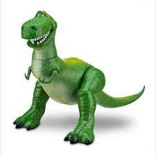

Dalla città di Spoleto arriva una teoria,
non ancora verificata ma da prendere senz'altro in
considerazione, sviluppata da tre toss... ricercatori
del liceo scientifico. Rosa Maria
Bartoloni, Riccardo Tomassoni e Alessandro Minestrini,dopo
studi approfonditi in materia, hanno infatti scoperto che a
Bergamo, dalle poco lecite invocazioni alle divinità locali,
potrebbe avere origine -incredibile ma vero- un nuovo pianeta dalla
forma bizzarra.
Ma come esattamente? Dopo varie ricerche sulla formazione
della Terra, la forma e le interazioni con gli altri corpi
nello spazio, nostri scienziati sono arrivati alla conclusione
che la Terra sia stata divorata da un Tyrannosaurus Rex dalle
dimensioni abnormi, che, una volta assorbita tutta l'energia
del nucleo (vedi anche:
"Godzilla: King of the Monsters"), è
diventato esso stesso il nostro mondo.

Per cogliere al meglio il collegamento con i cittadini lombardi,
dobbiamo tornare indietro nel tempo fino all'antica Grecia, quando
il filosofo Anassimandro teorizzò che la materia potesse avere
origine dall'Apeiron, principio infinito da cui tutto deriva. Ora,
stando al parere degli esperti, l'etimologia del termine Apeiron
deriverebbe dall'inglese Ape (scimmia) e iron (ferro) quindi ferro
delle scimmie. Successivamente, come tto notare da Tomassoni, questo
ferro sarebbe composto da una lega di bestemmie bergamasche al
98% e ferro solo al 2%. Quindi, considerando che dall'apeiron potrebbe
derivare un potenziale Dianeta, una bestemmia bergamasca potrebbe
generare un'intero mondo a forma di... Dinosauro!!